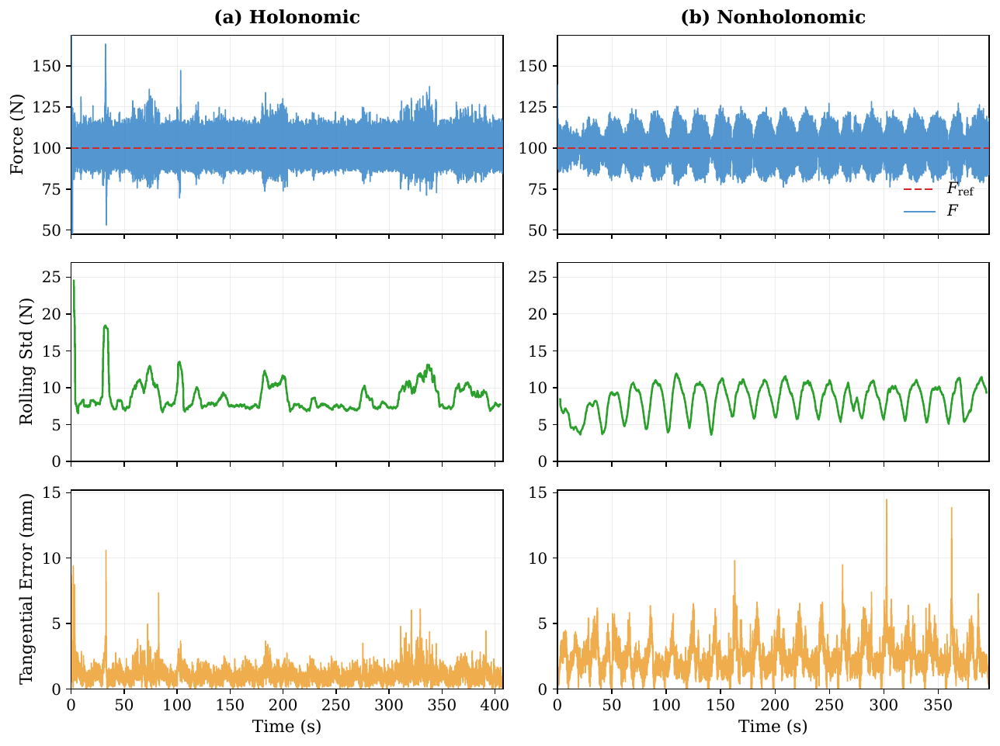
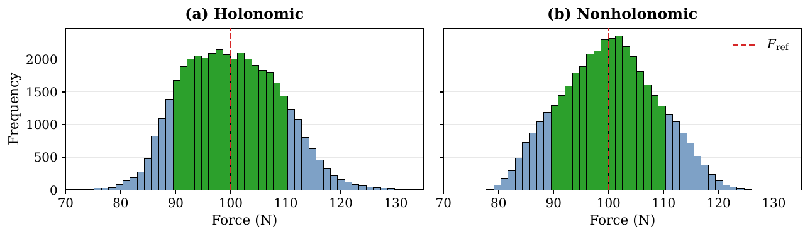
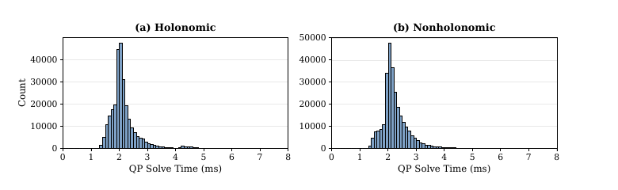
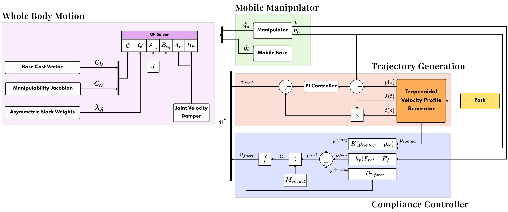

Overview
Mobile manipulators that do contact work, such as surface finishing or inspection on a wall, must press with a controlled force while following a path that often reaches beyond the arm. Whole-body controllers usually lack explicit force regulation, and force-capable methods often assume a fixed base or treat the base and arm separately.
This controller handles force and motion together on a moving base. The base and arm are treated as one system. The arm moves first because its motion is cheaper in the optimization, and the base follows when the arm runs out of reach. The test task is a serpentine wall-cleaning path held at 100 N of contact force.
The work was done during a research internship at A*STAR ARTC in Singapore and published at IEEE/ASME AIM 2026, Genova, Italy.
Hardware
Both platforms are simulated in Gazebo.
| Holonomic Platform | Robotnik RB-Kairos, omnidirectional Mecanum base, 9 DOF with the arm |
|---|---|
| Nonholonomic Platform | Robotnik RB-Theron, differential-drive base, 8 DOF with the arm |
| Arm | UR5e, 6 DOF |
| Force Sensing | Force-Torque Sensor at the End-Effector |
System
| Computer | 11th-gen Intel i7-1165G7, 2.80 GHz |
|---|---|
| Control Rate | 100 Hz |
| QP Solver | Clarabel |
| Software | ROS 2 Jazzy, Gazebo Classic 11, ros2_control |
Process
Treat base and arm as one robot
The mobile base and the UR5e arm are modeled as a single kinematic chain, so their motion is solved together.
Solve everything in one QP
One quadratic program handles trajectory tracking and limits for the whole body at 100 Hz.
Put force first
Force regulation is an asymmetrically weighted soft task. When force and trajectory cannot both be met, force tracking wins.
Add Cartesian compliance
A compliance layer keeps contact stable and avoids problems near singular configurations.
Compare on two robots
The same controller runs unchanged on an omnidirectional RB-Kairos and a differential-drive RB-Theron, against PID force control and admittance control.
Results
All runs are Gazebo simulations at a 100 N reference force. The canonical wall is a 5 m sweep. The curved arc has a 2 m radius.
Force regulation and tracking
Table 1. Proposed controller on the canonical wall
| Metric | Holonomic | Nonholonomic |
|---|---|---|
| Mean Force | 100.07 N | 100.12 N |
| Force RMSE | 9.29 N | 8.60 N |
| Within \(\pm 10\) N of Reference | 72.9% | 72.6% |
| Mean Tangential Error | 1.18 mm | 2.48 mm |
| RMSE Tangential Error | 1.35 mm | 2.79 mm |
| Maximum Tangential Error | 10.59 mm | 14.48 mm |


Comparison with force PID and admittance
The proposed controller has the lowest force error wherever the baselines complete the task. On the nonholonomic curved arc it is the only one that keeps contact (the others are marked "lost").
Table 2. RMSE by controller and surface, best value in bold
| Holonomic Base | Canonical Wall | Curved Arc | ||
|---|---|---|---|---|
| Force (N) | Trajectory (mm) | Force (N) | Trajectory (mm) | |
| Force PID | 10.50 | 1.33 | 17.41 | 1.77 |
| Admittance | 10.91 | 1.37 | 38.42 | 1.71 |
| Proposed | 9.29 | 1.35 | 12.31 | 1.74 |
| Nonholonomic Base | Canonical Wall | Curved Arc | ||
|---|---|---|---|---|
| Force (N) | Trajectory (mm) | Force (N) | Trajectory (mm) | |
| Force PID | 16.42 | 2.01 | Lost | Lost |
| Admittance | 24.83 | 1.95 | Lost | Lost |
| Proposed | 8.60 | 2.79 | 17.34 | 7.69 |
Real-time performance
Table 3. QP solve time on the 100 Hz loop
| Metric | Holonomic | Nonholonomic |
|---|---|---|
| Mean QP Solve Time | 2.30 ms | 2.31 ms |
| Control Period | 10 ms | 10 ms |
| Steps Solved | 99.998% | 99.998% |

Figures and Video
